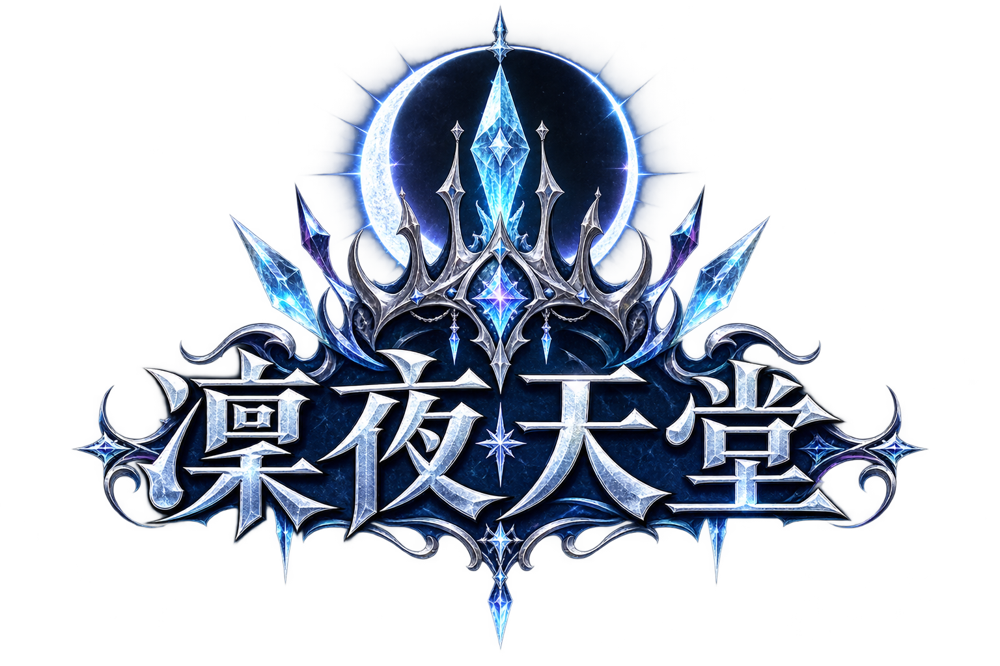

你的團隊，值得在開服前就被看見
凜夜天堂歡迎 AT 團、血盟領袖、實況主、影片創作者及遊戲社群合作。無論是整團進駐、首戰紀錄、直播工商或長期內容合作，都可依團隊規模與曝光方式洽談專屬方案。
AT 團／血盟進駐直播與短影音社群曝光合作長期工商規劃

凜夜天堂REALM OF THE FROST ECLIPSE 官方 LINE3.81 內掛（24 小時）· 全新凜月王權篇章
冰封王城等待新的統治者。保留熟悉的經典節奏，把版本規則、養成路線與遊戲資料一次整理清楚。
ASSEMBLE BEFORE NIGHTFALL
凜夜天堂歡迎 AT 團、血盟領袖、實況主、影片創作者及遊戲社群合作。無論是整團進駐、首戰紀錄、直播工商或長期內容合作，都可依團隊規模與曝光方式洽談專屬方案。
提前登記團隊規模、主要時段與首戰規劃，讓官方協助安排曝光與入駐資訊。
YouTube、Twitch、Facebook 與短影音創作者皆歡迎，合作規格可依內容形式討論。
開服宣傳、系列企劃、素材串聯與社群合作，歡迎提出完整合作方式。
SERVER PROFILE
FROSTBOUND SYSTEMS
NIGHT ARCHIVE
THE FROST ECLIPSE RISES
「凜」是寒意，也是令人敬畏的威儀；「夜」是征戰尚未結束的時刻。當冰月照亮王城，每一位冒險者都能為自己的名字奪下一席之地。